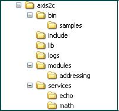

1. 2. Using Source Release
The following steps need to be taken to install and run Axis2/C using source distribution on Linux : -
- Extract the source tar package to a folder.
- Set AXIS2C_HOME environment variable pointing to the location where you
want to install Axis2C.
- AXIS2C_HOME='/your_desired_path_to_axis2c_installation'
- export AXIS2C_HOME
- Note : You will need to set AXIS2C_HOME only if you need to run Axis2C samples or tests. The reason is that the samples and test codes use AXIS2C_HOME to get the path to Axis2C. To write your own services or clients this is not a requirement.
- Then go to the folder where you extracted the source
- cd /your_path_to_axis2c_source
- Build the source
- This can be done using the following command sequence in the
directory where you have extracted the source:
- ./configure --prefix=${AXIS2C_HOME}
- make
- make install
- Use './configure --help' for possible command line options.
- Note :If you do not provide a --prefix configure option, it will by default be installed into /usr/local/axis2c directory.
- You may need to try Axis2/C with Guththila XML parser. You can do
it by giving --enable-guththila=yes
- ./configure --enable-guththila=yes [other configuration options]
- make
- make install
- In order to build Rampart (Axis2/C security module)
- ./configure --enable-rampart=yes [other configuration options]
- make
- make install
- If you need to get the samples working, you also need to build the
samples.
To build the samples:- export LD_LIBRARY_PATH=$LD_LIBRARY_PATH:/usr/local/axis2c/lib/
- cd samples
- ./configure --prefix=${AXIS2C_HOME} --with-axis2_util=${AXIS2C_HOME}/include --with-axiom=${AXIS2C_HOME}/include
- make
- sudo make install
- Please run "./configure --help" in samples folder for more information on configure options.
- Note : If you do not provide a --prefix configure option, samples will by default be installed into "/usr/local/axis2c/samples" directory.
- This can be done using the following command sequence in the
directory where you have extracted the source:
- Go to where you installed Axis2/C.
- Start simple axis server
- To start the simple axis server on port 9090 run the following
command lines
- cd ${AXIS2C_HOME}/bin
- ./axis2_http_server
- To see the possible command line options run ./axis2_http_server -h
- Note : You may need to be logged in as a superuser to run the simple axis server.
- To start the simple axis server on port 9090 run the following
command lines
- Run the sample clients in a new shell using the following command lines
- cd ${AXIS2C_HOME}/bin/samples
- to run client for echo service
- ./echo
- to run client for math service
- ./math
- To see the possible command line options for sample clients run them with '-h' option
2. Installing and Running on Microsoft Windows (win32)
This too can be done using either binary or source distributions.
For both the binary and source distributions, you need to download libxml2.
(NOTE: most Linux systems have libxml2 by default. On MS Windows you need to download and install libxml2)
2. 1. Using Binary Release
2.1.1. Requirements
- The binaries shipped with this version are compiled with Microsoft Visual Studio Compiler (cl)
- You also need the following dlls:
- libxml2.dll [http://www.xmlsoft.org - download the version >= libxml2-2.6.20.win32]
- iconv.dll [http://www.gnu.org/software/libiconv/ - download the version >= iconv-1.9.1.win32]
- zlib1.dll [http://www.gzip.org/zlib/ - download the version >= zlib-1.2.3.win32]
(Note: you can download Microsoft VSExpress2005 edition from the Microsoft Web site and install it to run these binaries)
2.1.2. Binaries in The Release
- Extract the binary distribution to a folder of your choice. (example: C:\axis2c)
- The C:\axis2c folder structure is as follows:
- bin - server and other executables
- bin\samples - client samples go here
- lib - library modules
- services - deployed services
- modules - deployed modules
- include - all include files of Axis2 C
- logs - system and client logs are written to this folder
- Copy libxml2.dll, iconv.dll and zlib1.dll downloaded to C:\axis2c\lib

The above folders contain the following files:
2.1.3. Running The Binaries
- First, you need to set a couple of environment variables before you can
run the server and samples.
- Set the variable AXIS2C_HOME to the deploy folder (C:\axis2c)
- Add the path to lib directory to the PATH variable (%AXIS2C_HOME%\lib)
- Now everything is set to run the server (C:\axis2c\bin\> axis2_http_server.exe)
- If the server is running successfully you should see the message "Started Simple Axis2 HTTP Server..."
- The log is by default created in %AXIS2C_HOME%\logs folder with the name axis2.log.
- (Note: You may provide command line options to change the default behaviour. Use the command "axis2_http_server.exe -h" to learn about the usage)
- Now you can run any sample client located in %AXIS2C_HOME%\bin\samples\
- Example: C:\axis2c\bin\samples\> echo.exe
2. 2. Using The Source Release
2.2.1. Requirements
- The makefile shipped with this version needs Microsoft Visual Studio Compiler (cl) and nmake build tool.
- You also need
- libxml2 [http://www.xmlsoft.org - download the version >= libxml2-2.6.20.win32]
- iconv [http://www.gnu.org/software/libiconv/ - download the version >= iconv-1.9.1.win32]
- zlib [http://www.gzip.org/zlib/ - download the version >= zlib-1.2.3.win32]
(Note: You can download Microsoft VSExpress2005 edition and Platform SDK from Microsoft Web site. You will need to add the path to Platform SDK Include and Lib folders to makefile)
2.2.3. Editing configure.in File
- The default paths for libxml2 and iconv are specified in configure.in
- Example:Default location for libxml2 is C:\libxml2
- You can either extract libxml2 to this folder, in which case folder structure for C:\libxml2 should look like the following:
- You need to have zlib1.dll in a library path. You may copy this dll to libxml2/lib.

Or extract to a location of your choice and edit the configure.in accordingly.
2.2.4. Compiling The Source
The following steps will take you through the source compilation
- Extract the source distribution to a folder of your choice. (Example: C:\axis2c)
- Open a DOS shell
- cd C:\axis2c\build\win32
- to access .Net tools, run
- C:\axis2c\build\win32> vcvars32.bat
(Note: You may need to set the PATH environment variable to vcvars32.bat if Windows complaints that it cannot find this bat)
- build the system and create a directory named deploy under build
directory:
- C:\axis2c\build\win32>nmake install
- The deploy folder structure is as follows:
- bin - server and other executables
- bin\samples - client samples
- lib - library modules
- services - deployed services
- modules - deployed modules
- include - all include files of Axis2 C
- logs - system and client logs are written to this folder

The above folders contain the following files:
2.2.5. Running The Binaries
- You need to set couple of environment variables before you can run the
server and samples.
- Set the variable AXIS2C_HOME to the deploy folder (C:\axis2c\build\deploy)
- Add the path to lib directory to PATH variable (%AXIS2C_HOME%\lib)
- Copy libxml2.dll, iconv.dll and zlib1.dll to axis2c lib folder (%AXIS2C_HOME%\lib)
- Now run the server - C:\axis2c\build\deploy\bin> axis2_http_server.exe
- If server is running successfully you should see the message "Started Simple Axis2 HTTP Server..."
- The log is by default created under %AXIS2C_HOME%\logs folder with the name axis2.log.
- (Note: you may provide command line options to change the default behaviour. Use the command "axis2_http_server.exe -h" to learn about the usage)
- Now you can run any sample client deployed under
%AXIS2C_HOME%\bin\samples\
- Example: C:\axis2c\build\deploy\bin\samples> echo.exe
3. Installing Apache2 Web Server Integration Module (mod_axis2).
3.1. Building mod_axis2 From Source Tree
3.1.1 On Linux Platform:
- Provide the apache2 include files location as configure option
./configure --with-apache2="<apache2 include files location>"
[other configure options] - Some apache2 distributions install APR
(Apache Portable Runtime) include files in a separate location which is
required to build mod_axis2. In that case use
- ./configure --with-apache2="<apache2 include files location>" --with-apr="<apr include files location>" [other configure options]
- Then build the source tree
- make
- make install
This will install mod_axis2.so into your "<your_path_to_axis2c>/lib"
3.1.2 On Win32 Platform:
- Provide the apache2 location in configure.in file in
APACHE_INSTALL_DIR
eg : APACHE_INSTALL_DIR = E:\Apache - After compiling the sources (As described in Section 2) build the mod_axis2.dll by issuing the command "nmake axis2_apache_module".
- This will build the mod_axis2.dll and copy it to %AXIS2C_HOME%\lib
directory.
eg: C:\axis2c\build\deploy\lib
3.2. Deploying in Apache2 Web Server
Note: To do the following tasks you might need super user privileges in your machine.
- Copy the mod_axis2 (libmod_axis2.so.0.0.0 on Linux and mod_axis2.dll in
Windows) to "<apache2 modules directory>" (eg:
/usr/lib/apache2/modules in Linux or C:\Apache2\modules in Windows) as
mod_axis2.so
eg: cp $AXIS2C_HOME/lib/libmod_axis2.so.0.0.0 /usr/lib/apache2/modules/mod_axis2.so
copy C:\axis2c\build\deploy\lib\mod_axis2.dll C:\Apache2\modules\mod_axis2.so - Edit Apache2's configuration file (generally httpd.conf) and add
the following directive : -
LoadModule axis2_module <apache2 modules directory>/mod_axis2.so Axis2RepoPath <axis2 repository path> Axis2LogFile <axis2 log file path> Axis2LogLevel LOG_LEVEL <Location /axis2> SetHandler axis2_module </Location>LOG_LEVEL can be one of following
AXIS2_LOG_LEVEL_CRITICAL - Log critical errors only
AXIS2_LOG_LEVEL_ERROR - Log errors critical errors
AXIS2_LOG_LEVEL_WARNING - Log warnings and above
AXIS2_LOG_LEVEL_INFO - Log info and above
AXIS2_LOG_LEVEL_DEBUG - Log debug and above (default)
AXIS2_LOG_LEVEL_TRACE - Log trace messages - Use forward slashes "/" for path seperators in <apache2 modules directory>, <axis2 repository path> and <axis2 log file path>
- Make sure that the Apache2 user has correct permissions to above
paths.
- Read permission to the repository
- Write permission to the log file
- Restart Apache2 and test whether mod_axis2 module is loaded by typing the URL http://localhost/axis2/services